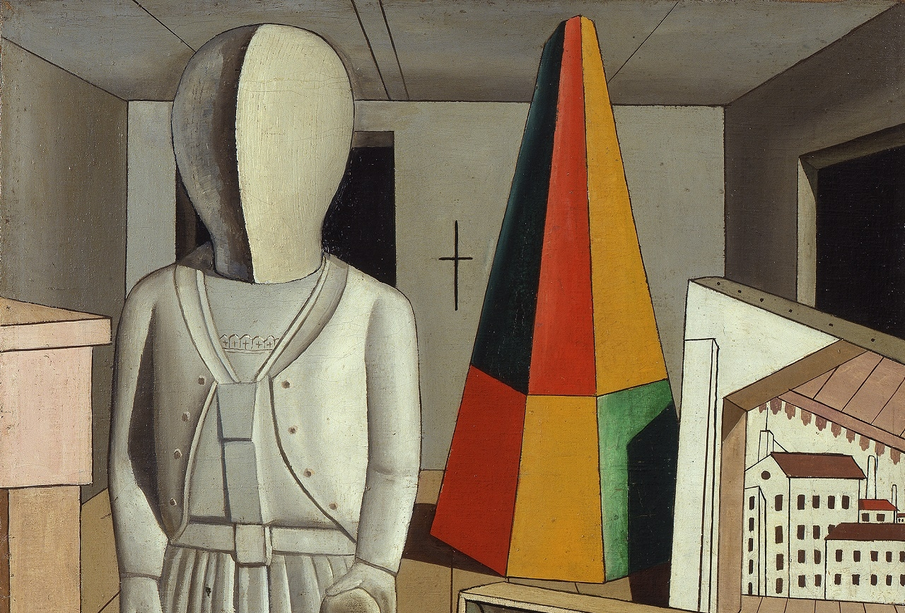

La musa metafisica
La musa metafisica
Carlo Carrà • 1917 • cm 90 x 62 • Milano, Museo Poldi Pezzoli, Collezione Mattioli
Torna alla homeUn’enorme manichino è poggiato in primo piano su di una base quadrata. Raffigura una giocatrice di tennis con la racchetta nella mano destra e la palla nella mano sinistra. Indossa un golfino chiuso con il primo bottone sul davanti. Una cintura stringe la gonna dalle molte pieghe. La testa, è appunto, rappresentata da quella di un manichino da sartoria. L’apparenza è quella di una statua in gesso. A terra appoggiato, vi è un plastico che riproduce una parte di terra che confina con il mare punto su di un angolo è rappresentato un bersaglio.
 La musa metafisica esposta al Museo Poldi Pezzoli.
La musa metafisica esposta al Museo Poldi Pezzoli.
Lo stile. Spazi vuoti, privi di vita e dalle prospettive inquietanti
È evidente nel dipinto La musa metafisica di Carlo Carrà, il recuperodella figurazione, negata delle avanguardie e all’astrattismo. Con una tecnica di pittura rinascimentale vengono modellate le figure con il chiaroscuro. Le superfici architettoniche, poi, sono rese attraverso campiture più o meno uniformi. Le pennellate, infine, sono levigate per formare superfici lisce e prive di trama.
Il colore e l'illuminazione
Le superfici della stanza, i muri e il soffitto sono colorati con un grigio medio oscurato nelle parti in ombra e illuminato sui battenti. Le aperture si affacciano su un nero totale. Il pavimento a listoni e alcuni altri particolari come il basamento del manichino e l’arredo, che si intravede a sinistra, sono dipinti in ocra. Il manichino è bianco con chiaroscuri grigi. Gli unici colori saturi e, quindi, molto evidenti sono il rosso e il verde. Tra i due vi è un forte contrasto di complementarità che li fa ulteriormente risaltare. Due facce del prisma sono colore ocra leggermente più saturo di quello del pavimento. L’illuminazione è ideale e modella le figure come fossero oggetti a se stanti. La luce proviene da destra, leggermente frontale e crea delle lunghe ombre nette sul pavimento e sugli oggetti.
 La musa metafisica esposta al Museo Poldi Pezzoli.lo spazio
Lo spazio è definito con una prospettiva lineare. Le linee del soffitto e del pavimento sono convergenti e si dirigono verso il centro della croce segnata sulla parete di fondo. Diversamente da queste, le fughe dell’apertura sulla parete laterale destra convergono verso l’esterno del dipinto. Verso lo stesso punto di si dirigono le linee del plastico appoggiato a destra in basso e del basamento del manichino. Il disegno del centro posto nell’angolo a sinistra in basso del plastico è evidentemente incoerente rispetto alla prospettiva dell’oggetto. Infatti il plastico è rappresentato in obliquo mentre il cerchio rosso del centro e quello nero sono rappresentati frontalmente. Altro elemento di inganno ottico è presente sui pannelli di destra. Infatti sul pannello frontale è rappresentato battente di un’apertura nella sua porzione alta e di sinistra. La parte verticale di sinistra acquista una tridimensionalità scendendo e diventando la base del pannello laterale, incontrando il pavimento. Un altro elemento di incoerenza e di ambiguità è il suolo rappresentato anteriormente alle case. La sua fuga pare frontale ma è direzionata in modo diverso rispetto a quella del pavimento della stanza.
la composizione
La composizione è centrale e si sviluppa in profondità intorno al prospettiva frontale della stanza. Il del dipinto è verticale ed è funzionale a comprendere interamente, per altezza, il manichino rappresentato a sinistra. Il peso della composizione pone in equilibrio simmetrico la grande immagine del manichino che pare una statua di marmo, quindi molto pesante, con i vari oggetti sparsi in profondità a destra.
Torna all'artista